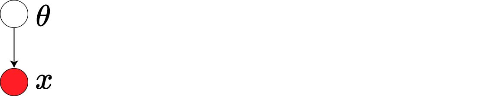
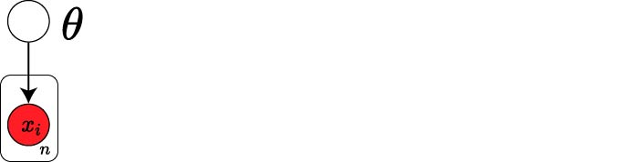

Maximum Likelihood and Maximum A Posteriori Estimation
Maximum Likelihood Estimation: Suppose that we have a probabilistic model of generating random data $x \in \mathcal{X}$ derived from function $P_{\theta}(x)$ that is parametrized by $\theta$. How can we estimate $\theta$? $$ P_{\theta}(x) : \mathcal{X} \rightarrow R, \quad \int_xP_{\theta}(x) dx = 1 $$
Let’s say we have seen some independent samples $x_1, x_2,.. x_n \sim P_{\theta^}$. By definition: $$ P_{\theta^} (x_1,x_2,..,x_n) = P_{\theta^}(x_1) P_{\theta^}(x_2)..P_{\theta^*}(x_n) $$
Can we estimate $\theta^*$?
So, how can we estimate the hidden variable $ heta $ from which our probability distributions are derived?
Example 1: Bernoulli distribution
In this example, our family is a class of random variables with possible values drawn from $\mathcal{X} \in {0,1}$ analogous to tossing a two-sided coin. We can derive the probability of each outcome via the following functions:
$$ P(X=1) = p \text{ and } P(X=0) = 1-p $$
It is a Bernoulli distribution parameterized by:
$$ \text{Bernoulli} (x|\theta) = \begin{cases} \theta & \text{if $x=1$} \\\ 1-\theta & \text{otherwise} \end{cases} $$ Where we can rewrite this with
$$ \text{Bernoulli} (x|\theta) = \theta^x(1-\theta)^{1-x} \text{ for } x \in {0,1} $$
Example 2: Categorical distribution over $x$
We define random variable $x \in \mathcal{X}:{1,2,..,M}$ has probability distribution: $$ P(x=i) = \theta_i $$
for some combination of $\theta_1,..,\theta_M > 0$ where $\theta_1+\theta_2+..+\theta_M=1$. In general, the family of probability distributions with the following characteristics is called simplex: $$ \Delta :{\theta=(\theta_1,\theta_2,..,\theta_M) \in R ^M: \theta_i \geq 0, \theta_1+\theta_2+..+\theta_M = 1} $$ We call $\mathcal{X}$ Categorical Distribution over $x$: $$ \text{Cat}(x=i|\theta) = \theta_i $$
Example 3: Gaussian distribution
This family of probability distributions with mean $\mu$ and variance $\sigma^2$ is called Gaussian and has the following density function: $$ P_{\theta}(x) = \text{Normal}(x|\mu,\sigma^2) = \frac{1}{\sqrt{2\pi \sigma^2}} e^{-\frac{(x-\mu)^2}{2\sigma^2}} $$ Where: $$ \mu = E_{P_{\theta}}[x]\\\ \sigma^2 = \text{Var}{P{\theta}(x)} = E_{P_{\theta}}[(x-\mu)^2] $$ and $$ \int_{-\infty}^{\infty} P_{\theta}(x) dx = 1 $$
In simple terms, maximum likelihood estimation is a technique that will help us to estimate our parameters $\hat{\theta}_{\text{MLE}}$ in a way that maximizes likelihood of generating the data:
$$ \begin{align} \begin{aligned} \theta_{\text{MLE}} = & \arg \max_{\theta} P_{\theta} (x_1,x_2,..,x_n)\\\ =&\arg \max_{\theta} P_{\theta} (x_1)P_{\theta}(x_2)..P_{\theta}(x_n) \\\ =&\arg \min_{\theta} \sum_{i=1}^{n}-\log P_{\theta} (x_i) \end{aligned} \end{align} $$
Which is the Empirical Risk Minimization for the following loss function:
$$ \mathcal{L}(\theta;x) = -\log P_{\theta} (x). $$
There are some nice properties that MLE has:
-
Consistency: Given $x_1,.., x_n \sim P_{\theta^}$ are iid data points. If $n \rightarrow \infty$, then $\theta_{\text{MLE}} \rightarrow \theta^$
-
Invariance: If we want to estimate MLE of $g = G(\theta)$ of $\theta$, intuitively we want to use $\hat{g} = G(\hat{\theta}_{\text{MLE}})$. Then $\hat{g}$ is the MLE of $g=G(\theta)$.
Examples of MLE
1. Coin Toss
We toss a fair coin multiple times. A simple sequence of outcomes could be H H H T T T H T T H T T. How to estimate the probability of the coin landing H? A very simple and intuitive answer could be $\frac{5}{5+7} = \frac{5}{12}$. This very natural answer tends out to be MLE of the Bernoulli model:$\text{Bernoulli} (x|\theta) = \theta^x(1-\theta)^{1-x} \text{ for } x \in {0,1}$.
In this example, MLE is: $$ \begin{align} \begin{aligned} \theta_{\text{MLE}} = & \arg \min_{\theta} - \sum_{i=1}^n \log \text{Bernoulli}(x_i| \theta) \\\ = & \arg \min_{\theta} - \sum_{i=1}^n (x_i \log (\theta) + (1- x_i)\log (1-\theta)) \\\ = & \arg \min_{\theta} - [(\sum_{i=1}^n x_i) \log (\theta) + (n-\sum_{i=1}^n x_i)\log (1-\theta)] \\\ = & \frac{1}{n} \sum_{i=1}^n x_i \end{aligned} \end{align} $$ You can obtain the last statement by deriving $- [(\sum_{i=1}^n x_i) \log (\theta) + (n-\sum_{i=1}^n x_i)\log (1-\theta)]$ with respect to $\theta$.
2. Binary Logistic Regression
In this case, our data points consist of $(x,y) \in R^d , (0,1)$ and the parameters are defined by $\theta = (w,b)$. Our model here is $P(y|x,\theta) = \text{Bernoulli}(y| \sigma(w.x+b))$ where $\sigma (z) = \frac{1}{1+e^{-z}}$ is the sigmoid function.
$$ \begin{align} \begin{aligned} P(y=1 | x,\theta) = & \sigma(w.x+b) \\\ =& \frac{1}{1+e^{-(w.x+b)}} \end{aligned} \end{align} $$
- MLE in Bernoulli model is Logistic Regression
$$ \begin{align} \begin{aligned} \theta_{\text{MLE}} = & \arg \max_{\theta} P(y| x,\theta)\\\\ = & \arg \min_{\theta} - \sum_{i=1}^n\log P(y_i|x_i,\theta) \\\\ = & \arg \min_{\theta} \sum_{i=1}^n\log (1+e^{-(w.x+b)}) \end{aligned} \end{align} $$
where $\log (1+e^{-(w.x+b)})$ is the logistic loss function.
3. Linear Regression as MLE in Gaussian Model
In this case, our data points consist of $(x,y) \in R^d , R$, and the parameters are defined by $\theta = (w,\sigma^2)$. Gaussian model is:
$$ y| x, \theta \sim \text{Normal}(w.x,\sigma^2) $$ Suppose that our variance $\sigma^2$ is fixed. Then the parameter here $\theta=w$ :
\begin{align} \begin{aligned} \theta_{\text{MLE}} = & \arg \max_{\theta} P(y| x,\theta)\\\\ = & \arg \min_{\theta} - \sum_{i=1}^n\log P(y_i|x_i,\theta) \\\\ = & \arg \min_{w} \sum_{i=1}^n\log \text{Normal}(y_i| w.x_i,\sigma^2)\\\\ =& \arg \min_{w}-\sum_{i=1}^n\log(\frac{1}{\sqrt{2\pi \sigma^2}} e^{-\frac{(y_i-w.x_i)^2}{2\sigma^2}})\\\\ =& \arg \min_{w} \sum_{i=1}^n \frac{1}{2\sigma^2} (y_i-w.x_i)^2 + c \end{aligned} \end{align}
$\sum_{i=1}^n \frac{1}{2\sigma^2} (y_i-w.x_i)^2$ is quadratic objective function in least square. Therefore, least square regression is MLE in the gaussian model and vice versa.
Maximum A Posterior Estimation (MAP): Let’s say parameter $\theta$ has a prior distribution $\theta \sim P(\theta)$. Data points $x$ is generated by a family of probabilistic model $x \sim P(x|\theta)$:

This graphical model describes the following steps:
- Draw $\theta \sim P(\theta)$
- Draw $x|\theta \sim P(x|\theta)$
Then joint distribution is defined: $P(x,\theta) = P(\theta).P(x|\theta)$. We only want to infer the value of $\theta$ given observation $x$. We can take advantage of Bayes Rule.
Bayes Rule:
$$ P(\theta| x) = \frac{P(\theta,x)}{P(x)} = \frac{P(\theta)P(x|\theta)}{P(x)} $$
Let’s fix the following terminologies:
- Posterior: $P(\theta| x)$
- Prior: $P(\theta)$
- Likelihood: $P(x|\theta)$
- Marginal: $P(x)$
Suppose that we observed $x_1,x_2,..x_n | \theta \sim P(x|\theta)$ independantly.

joint distribution: $P(\theta,x_1,x_2,..x_n) = P(\theta).P(x_1|\theta).. P(x_n|\theta)$.
Bayes Rule:
$$ P(\theta| x_1,x_2,..x_n) = \frac{P(\theta).P(x_1|\theta).. P(x_n|\theta)}{P(x_1, ..,x_n)} $$
However, the marginal distribution is not always easy to compute: $P(x) = \int_{\theta} P(x,\theta) d\theta = \int_{\theta} P(\theta). P(x|\theta) d\theta $. This integral could be intractable in the high dimensional space of $\theta$. Therefore, often we only approximate posterior up to the normalizing constant:
$$ P(\theta | x) \propto P(\theta). P(x|\theta) $$
subject to $\int_{\theta}P(\theta | x)d\theta=1$. Now MAP will help us by:
$$ \begin{align} \begin{aligned} \theta_{\text{MAP}} = & \arg \max_{\theta \in \mathcal{\Theta}} P(\theta|x) \\\\ =& \arg \max_{\theta \in \mathcal{\Theta}} P(\theta).P(x|\theta) \end{aligned} \end{align} $$
Example 1: MLE as MAP with Uniform Prior
Suppose prior $P(\theta)$ is uniform on $\mathcal{\Theta}$ (e.g., $P(\theta)=\frac{1}{b-a}$ for $\theta \in \mathcal{\Theta}$ ). We can say that $P(\theta)\propto 1$ and now: $$ \begin{align} \begin{aligned} \theta_{\text{MAP}} = & \arg \max_{\theta \in \mathcal{\Theta}} P(\theta|x) \\\\ =& \arg \max_{\theta \in \mathcal{\Theta}} 1.P(x|\theta) \\\\ =& \theta_{\text{MLE}} \end{aligned} \end{align} $$
Example 2: Beta-Bernoulli model
As we talked about earlier: $$ \text{Bernoulli} (x|\theta) = \begin{cases} \theta & \text{if $x=1$} \\\\ 1-\theta & \text{otherwise} \end{cases} $$
also recall that given $y_1,y_2,..y_n \in {0,1}$ MLE estimator is $\theta_{\text{MLE}} = \frac{y_1+y_2+..+y_n}{n}$:
$$ P(y| y_1,y_2,..,y_n) \approx P(y|\theta_{\text{MLE}}) \begin{cases} \theta_{\text{MLE}} & \text{if $y=1$} \\\\ 1-\theta_{\text{MLE}} & \text{otherwise} \end{cases} $$
However, this method is prone to overfitting: For example, $y_1=..=y_n=1$ then $\theta_{\text{MLE}}=1$ and the model will always predict $y=1$.
How to fix this with MAP?
- Put prior on $\theta$, compute $\theta_{\text{MAP}}$.
- What prior on $\theta \in [0,1]$? Use Beta distribution, which is conjugate prior to Bernoulli:
$$ P(\theta | \alpha, \beta ) = \frac{\theta^{\alpha-1}(1-\theta)^{\beta-1}}{B(\alpha,\beta)} \propto {\theta^{\alpha-1}(1-\theta)^{\beta-1}} $$
Where:
$$ B(\alpha,\beta) = \int_0^1 \theta^{\alpha-1}(1-\theta)^{\beta-1} = \frac{\Gamma \left( \alpha \right) \Gamma \left( \beta \right)}{\Gamma \left( \alpha + \beta \right)} $$
is the normalizing constant and $\Gamma \left( x \right)$ is the gamma function (i.e., $\Gamma \left( n \right)=(n-1)!$). Then, MAP estimation for the Bernoulli model with Beta distribution:
- Suppose $\theta$ comes from $\text{Beta}(\theta|\alpha, \beta) = P(\theta)$ is prior
- Suppose we observe $y_1,y_2,..,y_n | \theta \sim \text{Bernoulli}(y|\theta)$ is likelihood
- Posterior distribution of $\theta$ is still a Beta distribution: -$$ \begin{align} \begin{aligned} P(\theta|y_1,y_2,..)\propto & P(\theta).P(y_1|\theta)..P(y_n|\theta) \\\\ \propto & \theta^{\alpha-1}(1-\theta)^{\beta-1}\prod_{i=1}^{n} {\theta^{y_i}(1-\theta)^{1-y_i}} \\\\ = & \theta^{\alpha-1+\sum_{i=1}^ny_i}.(1-\theta)^{\beta-1+\sum_{i=1}^n(1-y_i)} \\\\ =& \text{Beta}(\alpha-1+\sum_{i=1}^ny_i,\beta-1+\sum_{i=1}^n(1-y_i)) \end{aligned} \end{align} $$
We covered this post in the introduction to machine learning CPCS 481/581, Yale University, Andre Wibisono where I (joint with Siddharth Mitra) was TF.